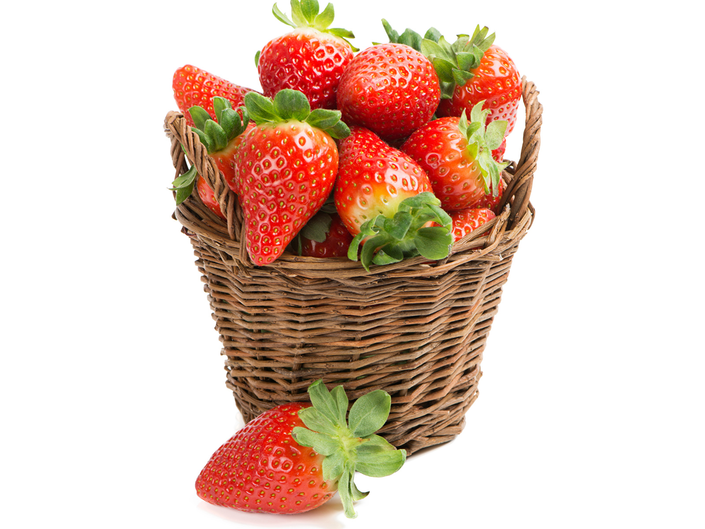
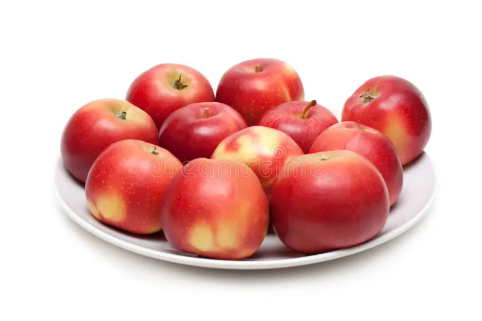
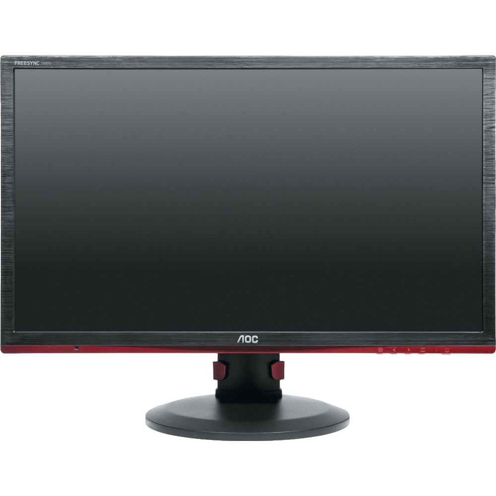
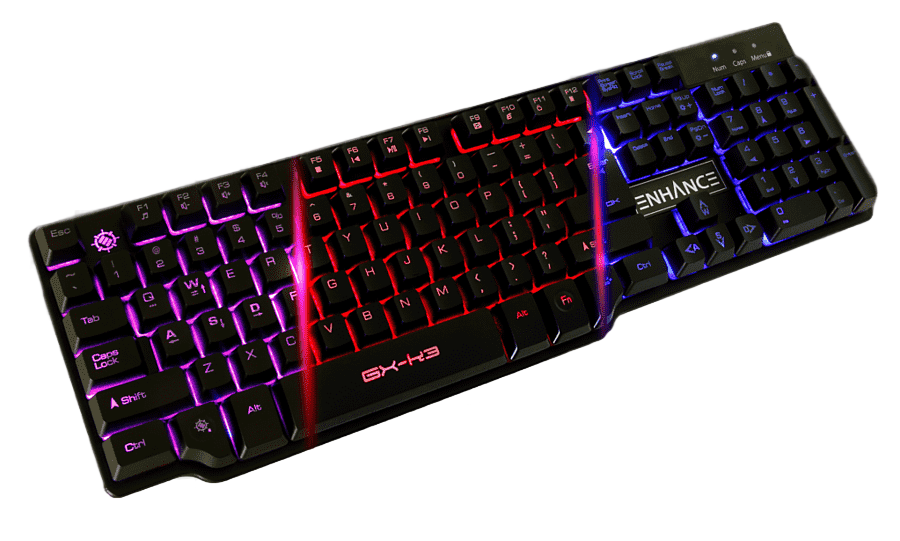
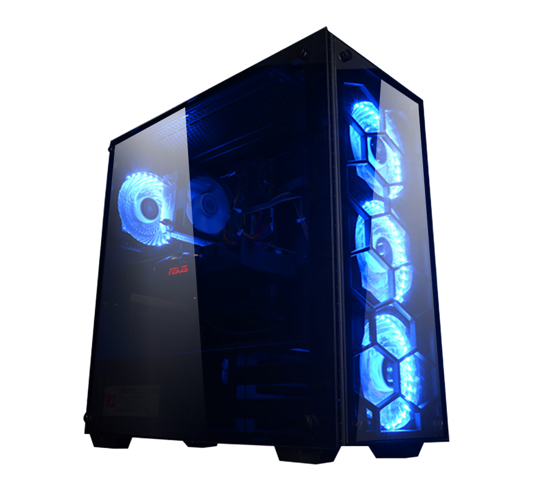
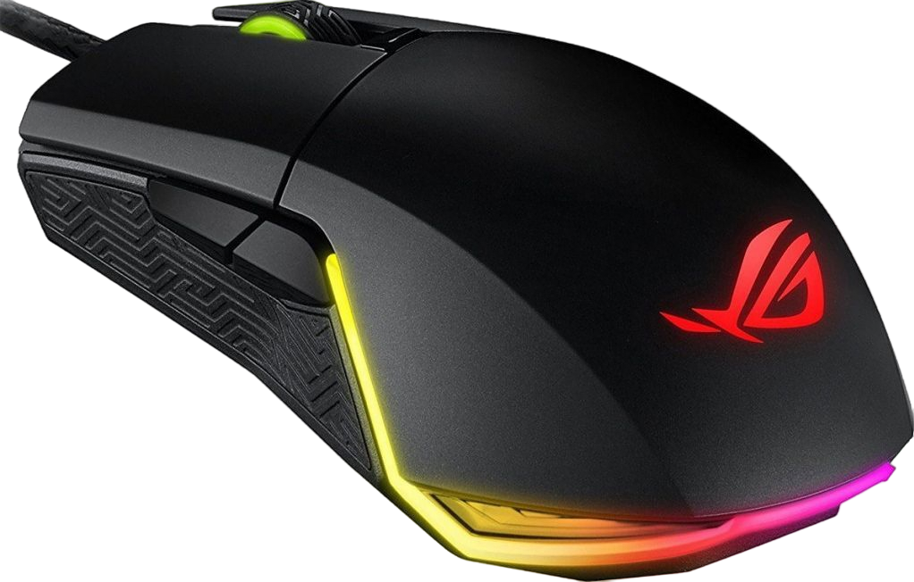

Летающий ангел
Используя возможности HTML-языка можно заставить летать ангела по странице.
И не только ангела...

 Полученный с его помощью кефир является уникальным лечебным препаратом, помогающим бороться с аллергией, гипертонией, язвенной болезнью желудка и двенадцатиперстной кишки. Его употребление нормализует кишечную микрофлору. Кефир, получаемый в результате жизнедеятельности гриба, оказывает общее оздоровительное действие и стимулирует иммунитет.
 Настой тибетского молочного гриба снижает вес при ожирении. Весь его секрет в том, что он преобразует жиры в более простые соединения, которые затем сам же и выводит из организма человека. Для того чтобы похудеть, следует пить настой тибетского молочного гриба ежедневно через полчаса после еды и один два раза в неделю устраивать разгрузочные дни.
В В лесу она росла, Зимой и летом стройная, Зеленая была. М -Спи, елочка, бай-бай. Мороз снежком укутывал: -Смотри, не замерзай. Используя возможности HTML-языка можно заставить летать ангела по странице.Задание 8
Летающий ангел
И не только ангела...
Задание 9




Задание 10
Кнопочка назад